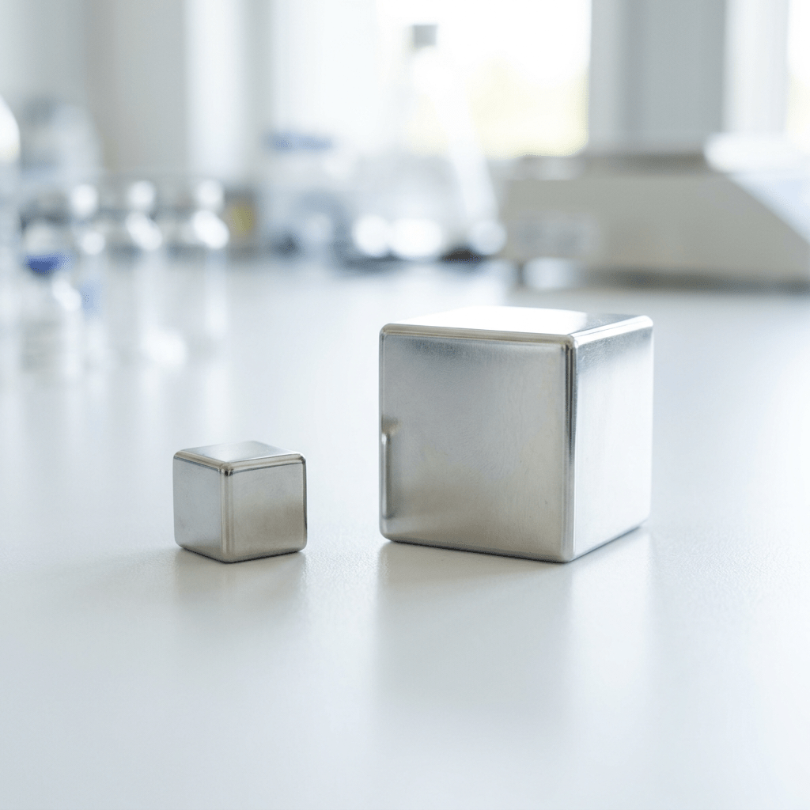
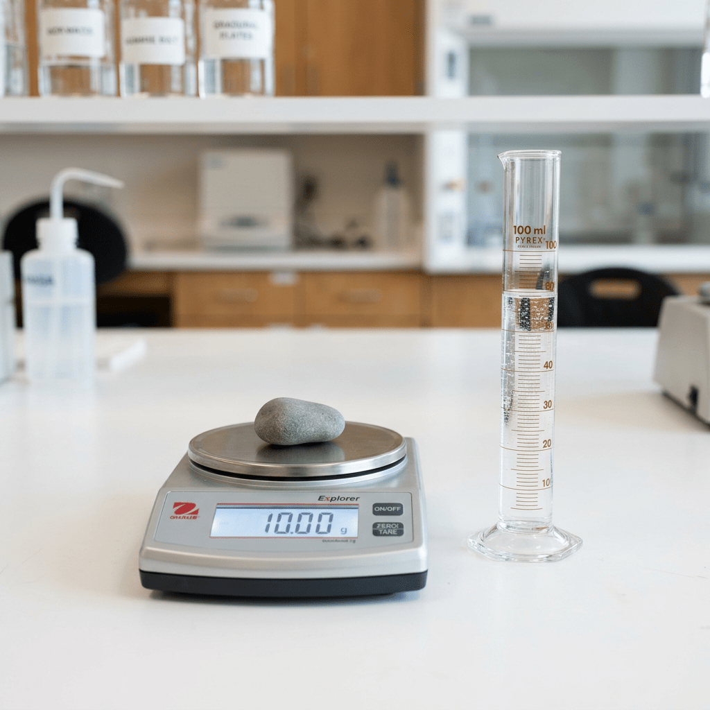
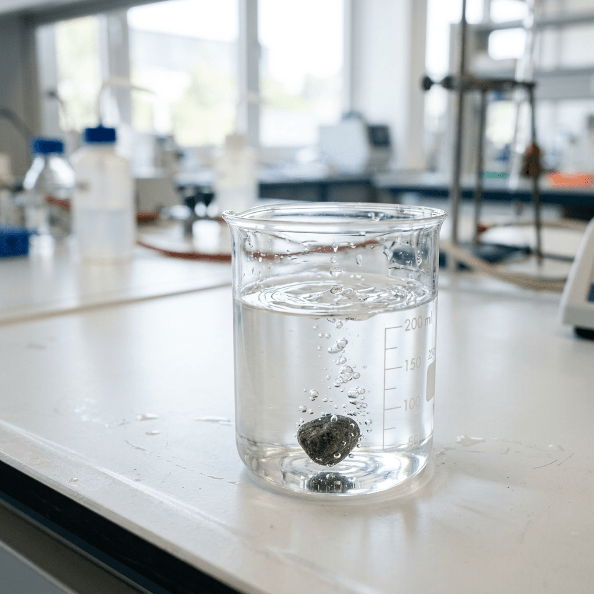
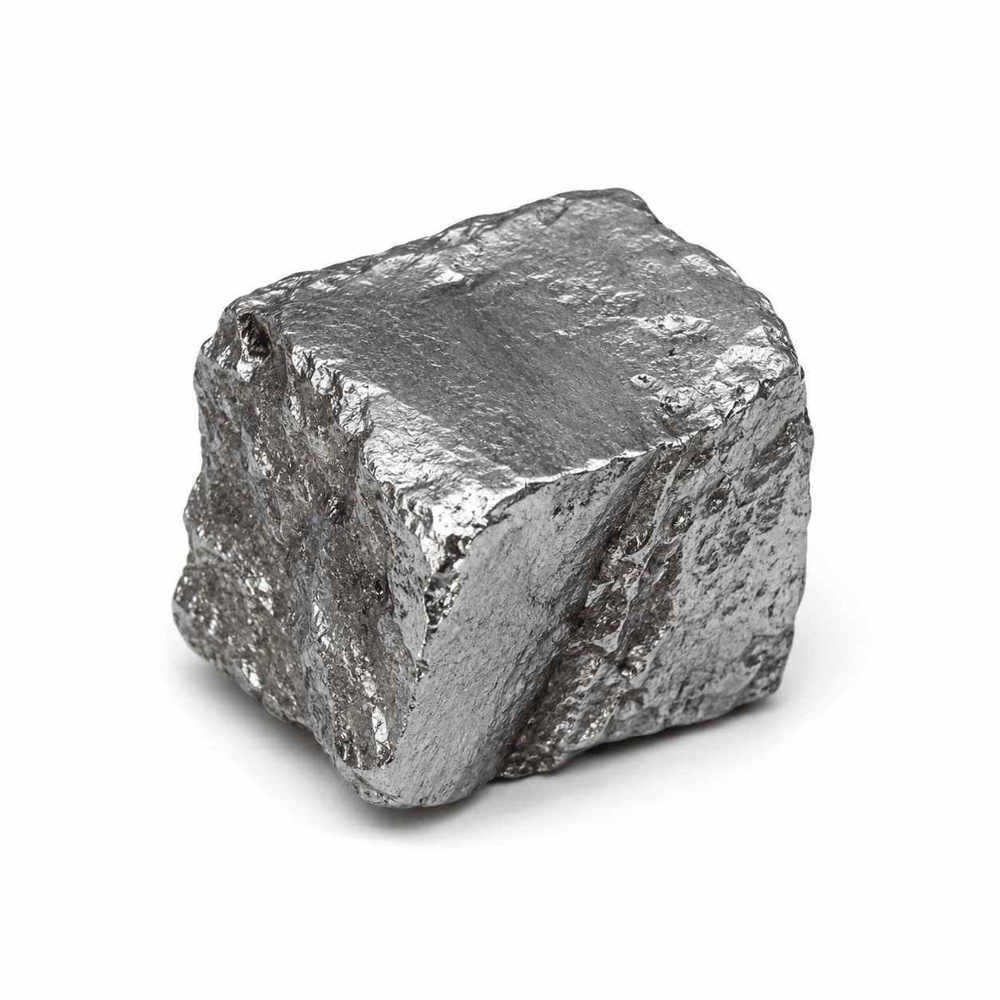

التمرين هو أفضل طريقة لتعزيز التعلّم
4 أسئلة
والتلميح موجود منذ البداية! أجيبوا إجابة صحيحة عن 3 أسئلة فأكثر للمتابعة.
أكمِلوا الجملة من بنك الكلمات.
الكثافة هي
للمادة.

كتلة جسم معين 10 غرام وحجمه 2 سم³. ما كثافته؟
5 غرام/سم³
12 غرام/سم³
20 غرام/سم³
8 غرام/سم³

في الرسم البياني أمامكم مُوضَّحة خطوط الكتلة-الحجم لأربع مواد.
اضغطوا على الخط الذي يمثل المادة ذات الكثافة الأعلى.
أكملوا الناقص
كثافة الماء هي
غرام/سم³.
مادة ذات كثافة 2.3
في الماء.

عمل رائع!
إليكم تمرينين آخرين
بمستوى صعوبة أعلى.
أنا واثق من أنكم ستنجحون!
قطعة معدن غير معروفة كتلتها 270 غرام وحجمه 100 سم³.
احسبوا كثافته واستعينوا بجدول الكثافات لتحديد نوع المعدن.
2.70 غرام/سم³ - الفضة
2.70 غرام/سم³ - الألومنيوم
7.87 غرام/سم³ - الحديد
27 غرام/سم³ - لا تطابق لأي معدن في الجدول

| الكثافة (غرام/سم³) | مادة |
|---|---|
| 2.70 | الألومنيوم |
| 7.87 | الحديد |
| 10.5 | الفضة |
غُطست كرة زجاجية في سائل شفاف، وقد غرقت حتى القاع.
في الرسم البياني للكتلة-الحجم يظهر خط الكرة الزجاجية وخط السائل.
اسحبوا الكلمات وأكملوا النص:
الكرة غرقت، لأن كثافتها
من كثافة السائل.
في الرسم البياني للكتلة-الحجم، تُمثَّل المادة ذات الكثافة الأكبر بخط
أكبر.
معتدل
كبيرة
شديد الانحدار